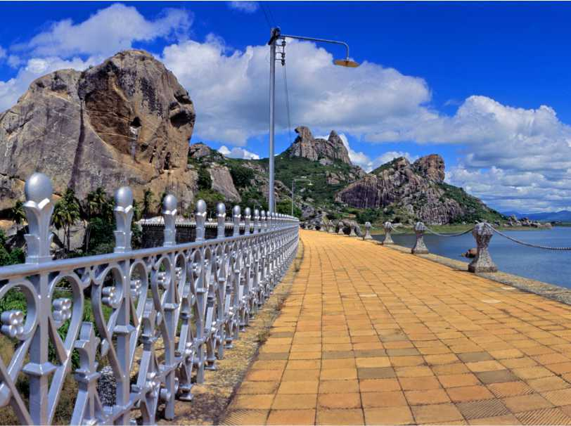
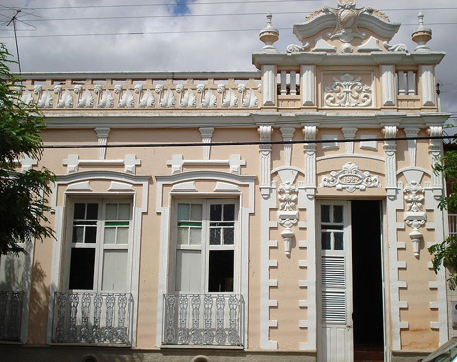
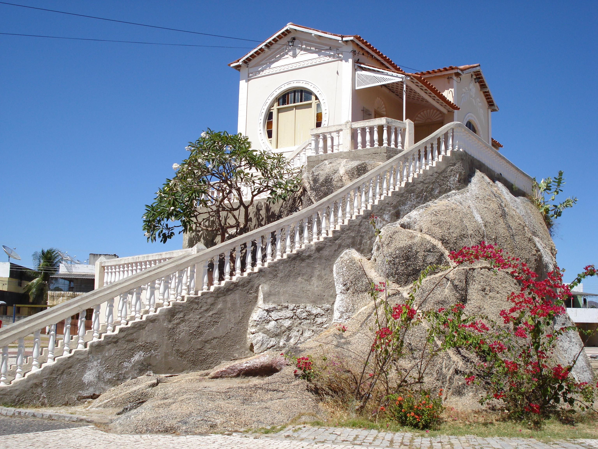

Se você está a procura de um lugar para desncansar,bem centralizada
aqui em Quixadá,você veio ao lugar,no melhor hotel do sertão central.
Temos as melhores Instalações mais vista de toda cidade e região,com aréas
de lazer,jogos,espaço para eventos e um restaurante de ótima qualidade.Venha conferir
nosso hotel e curtir as belezas naturais da nossa cidade!
A foto logo abaixo mostramos uma das familías que vieram curtir o carnaval na nossa cidade
e no nosso hotel,na qual curtiram todas as acomodações do nosso hotel e as atrações da cidade,
obtivemos muitos elogios e um feedback da familia sobre nossa hospedagem e sobre a cidade.

Passarela da parede do Açude Cedro
- Ao fundo Pedra da Galinha Choca
O Açude do Cedro foi umas das primeiras
grandes obras de combate à seca realizadas pelo Governo Brasileiro. A ordem de construção foi dada por
D. Pedro II em decorrência do grande impacto social provocado pela seca de 1877 - 1879.
No ano de 1882 o primeiro projeto foi feito pelo próprio Jules Revy que coordenou a realização
de obras preliminares, como a construção de uma estrada de acesso e a instalação das máquinas.

Museu Histórico Jacinto de Sousa
Foi criado em 27 de outubro de 1984 com o nome de Museu Histórico de Quixadá.
Seu nome foi alterado, para homenagear o artista quixadaense Jacinto de Sousa, pela lei municipal n° 1999 de 11 de agosto de 2000.
O museu ocupa uma casa construída em 1922[1] por Raimundo Franklin,
um dos autores do monumento localizado na praça da estação, que fica em frente ao museu.
A construção foi tombada em 14 de fevereiro de 2000 pelo decreto municipal n° 007.

Chalé de Pedra
O Chalé da Pedra é uma construção histórica localizada no
centro da cidade de Quixadá datada da década de 1920 que tem como uma de seus
principais atrativos, o fato de estar sobre um monólito. Hoje abriga um centro cultural.